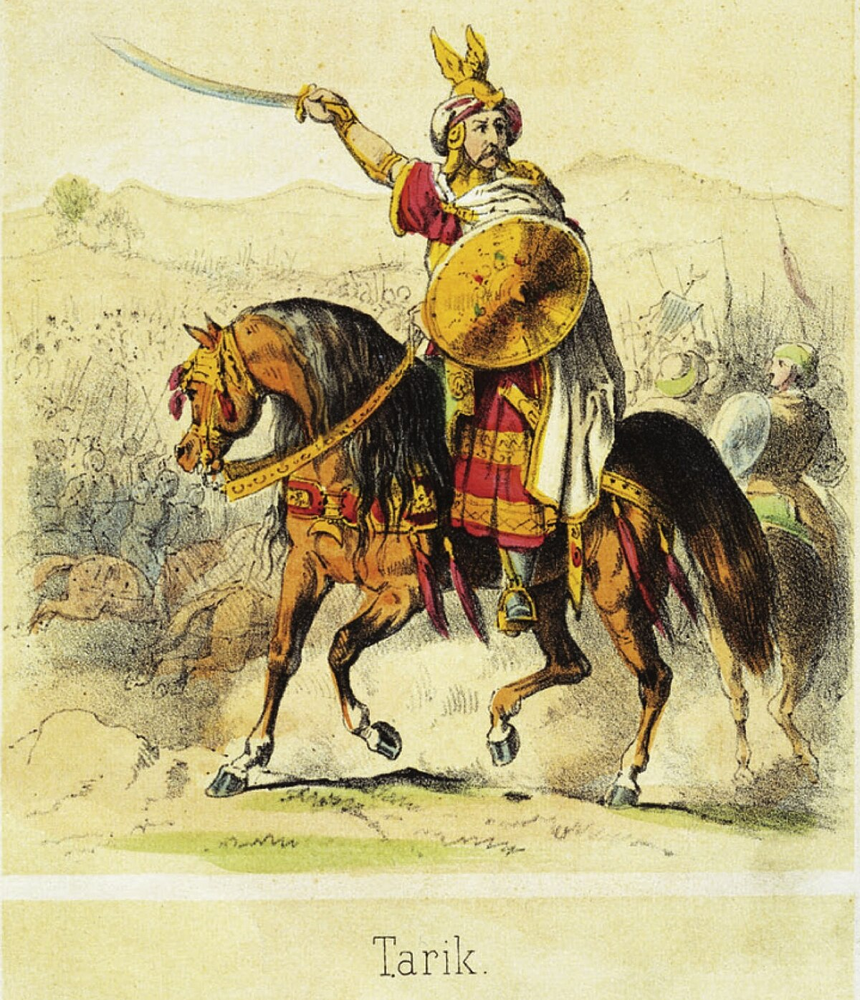

La invasión musulmana de la Península Ibérica tuvo lugar entre 711 y 718, marcando el comienzo de varios siglos de presencia musulmana en la región y un cambio significativo en la historia de la península.
En el año 711, tras la muerte del último rey visigodo Rodrigo, el reino visigodo de Toledo se desmoronó, lo que permitió la invasión de la Península Ibérica por las fuerzas musulmanas. La expedición fue encabezada por el general Tariq ibn Ziyad, quien cruzó el estrecho de Gibraltar y desembarcó en la costa sur de la península con un ejército de aproximadamente 7.000 hombres.
En un corto periodo de tiempo, los musulmanes lograron una serie de victorias decisivas que les permitieron avanzar rápidamente a través de la península, culminando en la toma de importantes ciudades como **Córdoba** y **Sevilla**. Este evento marcó el inicio de un dominio musulmán que perduraría durante casi 800 años.
El avance de las tropas musulmanas fue rápido y eficiente. Después de la victoria en la Batalla de Guadalete (711), donde el ejército visigodo fue derrotado, los musulmanes tomaron control de gran parte de la península.
Durante estos primeros años, el **Emirato de Córdoba** fue establecido como un territorio musulmán independiente, aunque inicialmente dependiente del califato de Damasco.
La invasión musulmana dejó un legado cultural, científico y arquitectónico profundo en la Península Ibérica. Durante siglos, los musulmanes dominaron partes de la península, trayendo consigo avances en matemáticas, astronomía, medicina y filosofía.
El periodo de **Al-Andalus** fue también un periodo de convivencia entre musulmanes, cristianos y judíos, lo que permitió el intercambio de conocimientos y el florecimiento de una cultura rica y diversa.
Sin embargo, la invasión también marcó el inicio de un largo conflicto entre los reinos cristianos del norte y los musulmanes del sur, lo que daría paso a la **Reconquista**, que duraría hasta 1492, con la caída de Granada.
El general Tariq ibn Ziyad: (circa 670 - circa 720) fue un general bereber del Imperio Omeya que jugó un papel clave en la conquista musulmana de la península ibérica. En el año 711, al mando de un ejército principalmente bereber, cruzó el estrecho de Gibraltar desde el norte de África hacia la actual España, derrotando al rey visigodo Rodrigo en la famosa Batalla de Guadalete. Esta victoria abrió el camino para la expansión del dominio musulmán en la península, lo que resultó en la creación de Al-Ándalus. Tariq es considerado un líder militar destacado y un símbolo del auge inicial del Islam en Europa.
